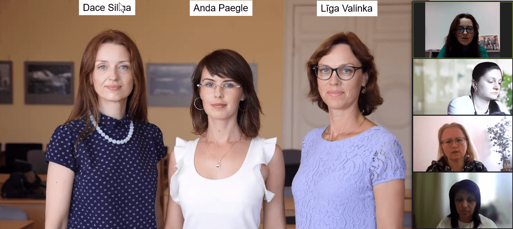
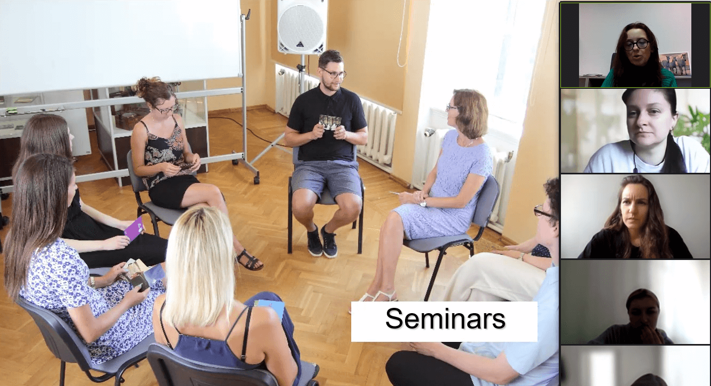
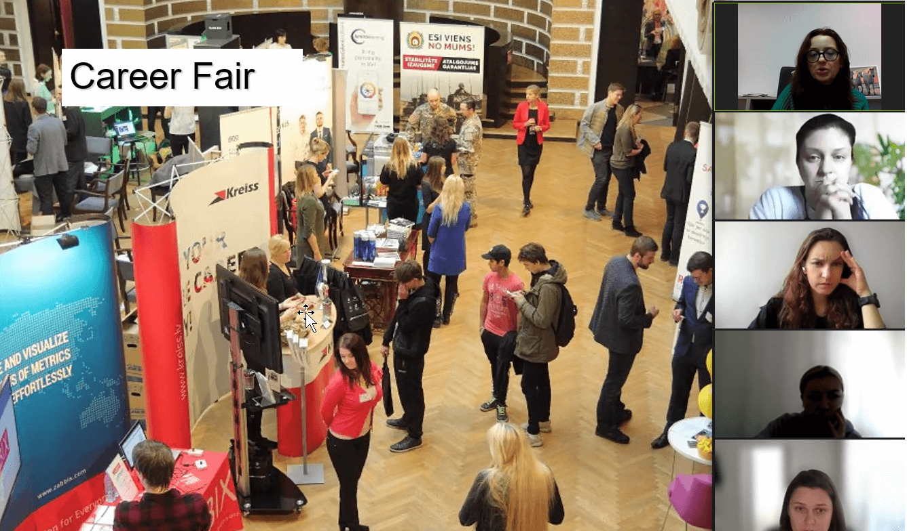

Webinar 1 "Center for Psychological Resilience and Wellbeing" at University of Latvia (May 8, 2024)
The University of Latvia held a webinar on May 8 focusing on its Career Center. Dace Siliņa, a manager and coach at the center, highlighted its key functions. Part of the "Study Support Department," the Career Center comprises four departments: Academic Services, Admissions, Mobility, and Career Center itself. Staff like Anda Paegle, a project manager, and Līga Valinka, a professional psychologist, contribute to its diverse services.
These services include individual consultations and psychological support, mentoring, job fairs, seminars, workshops, and access to information resources. Individual consultations, a cornerstone service, cover career counseling, coaching, resume and cover letter assistance, job search support, and psychodiagnostics. These sessions cater to both current students and prospective applicants, aiding in career planning, skill development, and university selection.

The University of Latvia Career Center considers seminars a crucial element of its operations. These group sessions cover diverse career development topics, including time and stress management, research methods, teamwork, presentation skills, career strategies, and creativity enhancement. While primarily conducted in Latvian, foreign students are welcome. The Career Center prioritizes inclusivity, ensuring accessibility for all students.
Further, the center's operations encompass guest lectures and career fairs. Guest speakers, often successful professionals, share insights to inspire and enhance students' professional skills. Career fairs provide platforms for students to meet potential employers and explore job opportunities. Companies across sectors participate, paying fees for interaction with talented students. For companies, benefits include talent recruitment and brand exposure, while students gain opportunities for employment, networking, and insight into career paths.
The University of Latvia Career Center offers a Mentorship Program, where experienced alumni voluntarily mentor students for a year. Together, they create a tailored work plan focusing on career skill development. Benefits include practical experience, networking opportunities, and personal support from mentors, culminating in honorary certificates for successful completion.

Additionally, the Career Center hosts a Mental Health Day, featuring activities like webinars and workshops to promote mental well-being. These events raise awareness and equip students with skills to manage mental health, including techniques like metaphorical associative cards and meditation. The center emphasizes the importance of achieving a healthy work-life balance to support students' overall mental health.